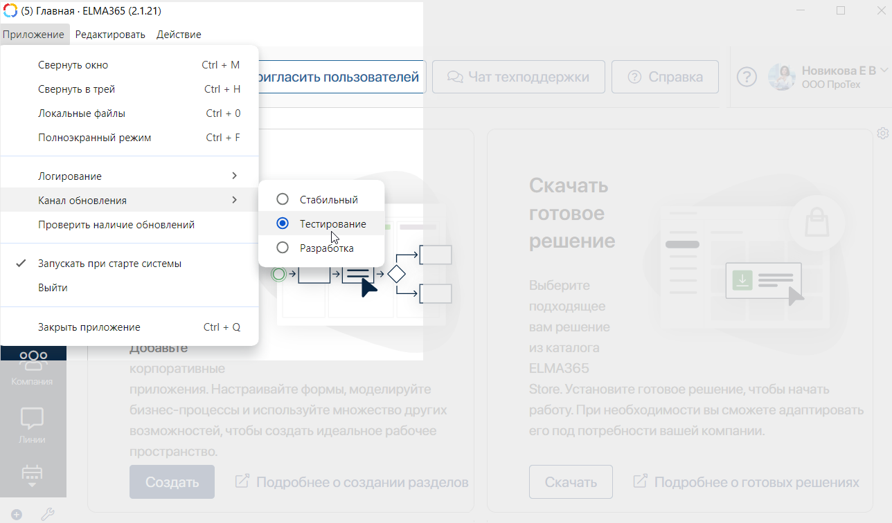
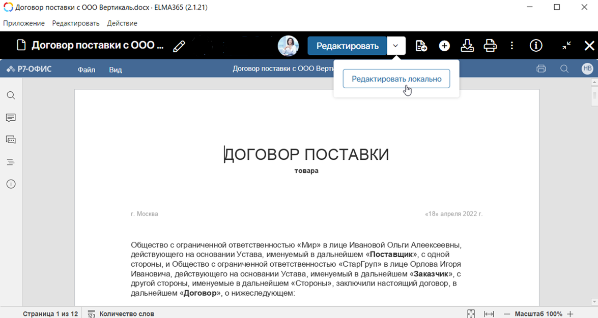
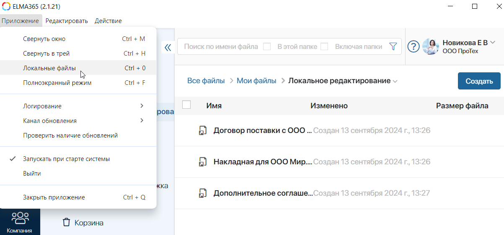
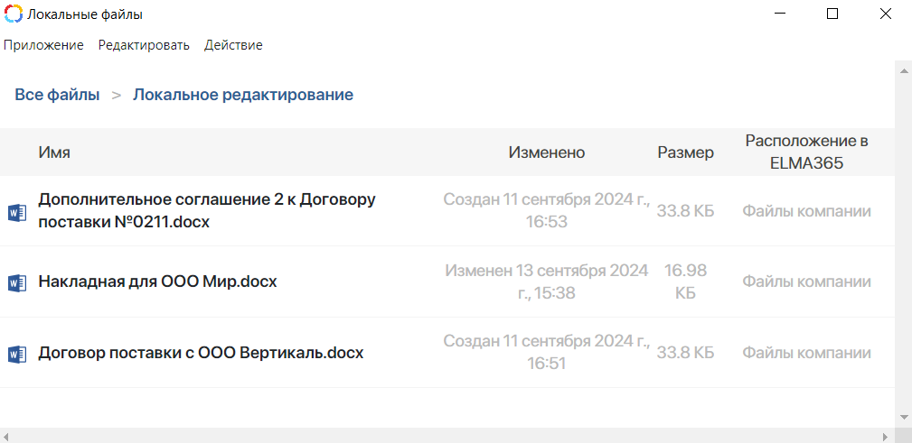
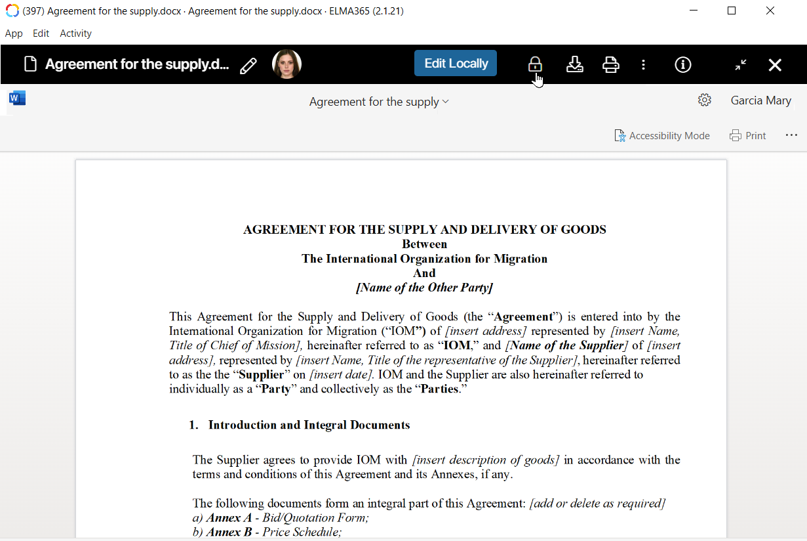

Online editing
You can edit files online from the BRIX interface.
To do this, in the file view mode, click Edit on the top panel. The document editing window will open.
After editing the file, you can:
|
Exit file editing mode and continue file viewing. |
Close the preview page. |
A new version of the file will be added to the system, which will become the current one.
Local editing
In the BRIX application for Desktop, you can edit files using installed office programs such as Microsoft Office without an Internet connection.
Local editing is supported for the following file formats: .doc, .docx, .xlsx, .pptx, .odt, .odp, and .ods.
Let’s take an example of how documents from the Files workspace can be edited from the computer:
- An employee in the BRIX application creates a local copy of an agreement. The file is locked in BRIX and a local copy is saved in the system.
- Without an Internet connection, the employee can open the copy of the agreement in the Word program, make edits, and save the file.
- A new version of the agreement is added to BRIX.
- Once the internet connection is restored, the employee goes to the BRIX application. They open the agreement in view mode and unlock it so that other users can work with the updated version of the file.
Local editing is available for:
- Documents from app items. For this purpose, the Upload and Preview File widget is placed on the app form. For more information on how to work with a copy of a document, see the Edit documents locally article.
- Files from the Files workspace. Creating and editing local file copies will be considered in this article.
Enable local editing
Local editing is available in BRIX application version 2.1.21 and higher in the Testing update channel.
начало внимание
The Testing channel contains less stable versions of the system, intended to test new functionality before releasing a stable version of the application.
конец внимание
To enable local editing, follow the steps below:
- Open the BRIX application for desktop.
- From the top panel, click App and select Update from > Testing.

- In the window that appears, download version 2.1.21 or higher.
- Install the update.
Create a local copy of the file
To create a local copy of a file, follow these steps:
- Go to the Files workspace.
- Open a document in preview mode.
- Next to the Edit button, click the icon and select Edit Locally.

After that:
- The file will be opened in an office program on your PC, e.g., Word or Excel.
- A shortcut to the file will be added to the My Files > Local Editing folder for quick access to the file from the system.
- Actions with the file in BRIX will be locked for other users.
- Make the changes in the program.
- Save the file. A new version will be automatically added to BRIX.
To open the list of saved local copies go to the BRIX application and on the top panel click App > Local Files.

Select a file from the list to reopen it on your computer, edit it, and add the new version to BRIX.

The specifics of working with a local copy of a file:
- The list of local copies is available to the user even without the Internet.
- Reopening and editing are possible as long as the copy is listed in the BRIX application.
- To remove a copy from the list, unlock the file in BRIX.
Unlock a file in BRIX
When you create a local copy of a file, it is locked in BRIX. This means that other users will only be able to view the file. In the view mode, they will see the profile photo of the user who created the local copy of the file and a lock icon next to it.
You and the system administrator can unlock the file. To do this:
- If you have access to the Internet, go to BRIX.
- For quick access to files with local copies, open the Files > My Files > Local Editing folder, where the file shortcuts are stored.
- Open the desired file in view mode.
- On the top panel, click the lock icon.

After that:
- The local copy will be removed from your list in the BRIX application.
- Other users will again have access to all actions with the file.
Found a typo? Select it and press Ctrl+Enter to send us feedback